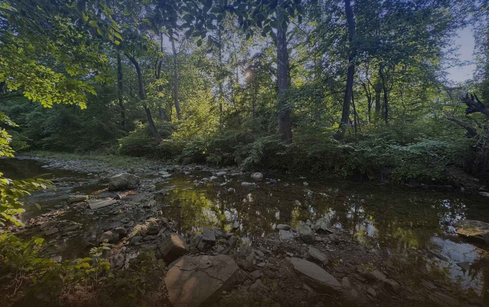

Community
Community voices shape the agenda

West & Southwest Philadelphia · Cobbs Creek Park
A Community Research Symposium
At the Cobbs Creek Community Environmental Center
Register nowOrganized by Water Center at Penn and Drexel University SWRE
The Cobbs CREEK Symposium brings together residents, researchers, students, and community partners for a full day of sharing work on the watershed, exchanging perspectives, and identifying priorities for future research and action.
Community voices shape the agenda
Academic and applied research
Opportunities to participate
Share findings and perspectives
Accessible, practical knowledge
Registration
Use the form to indicate how you would like to participate. Additional event information will be shared in the coming weeks.
Register now